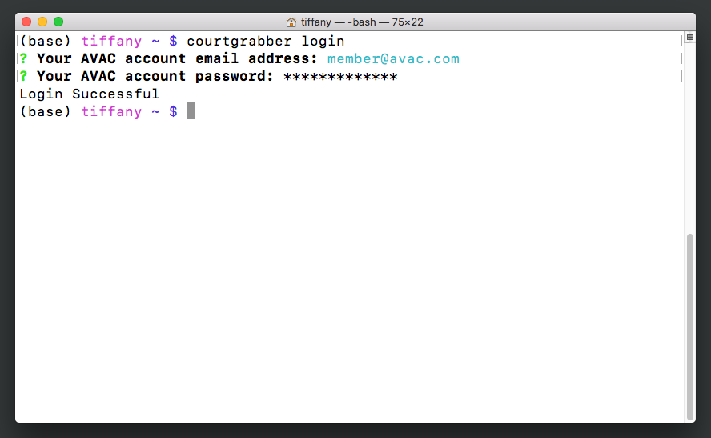
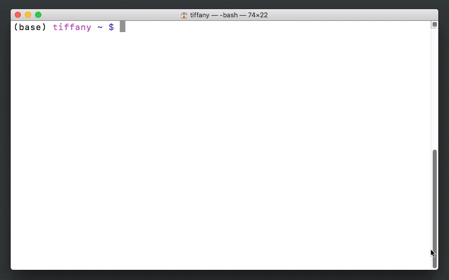
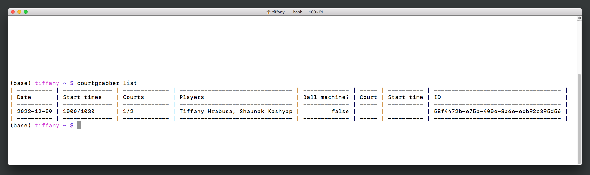
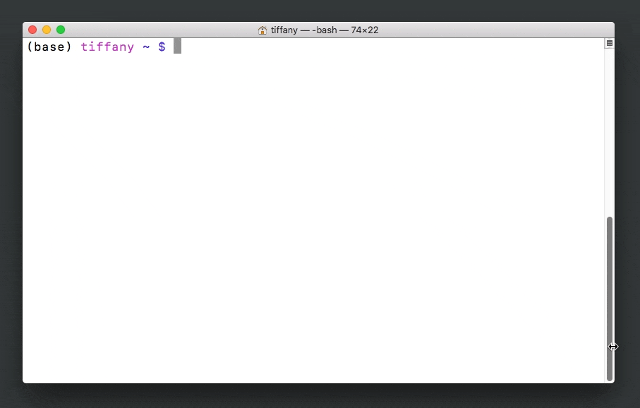
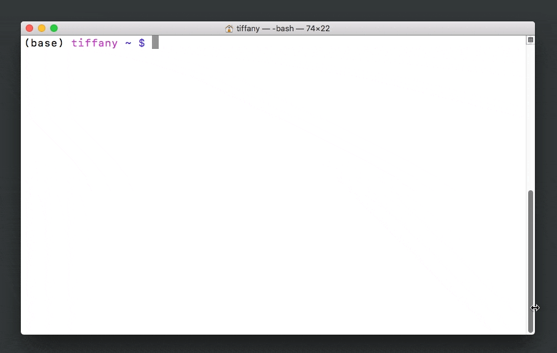
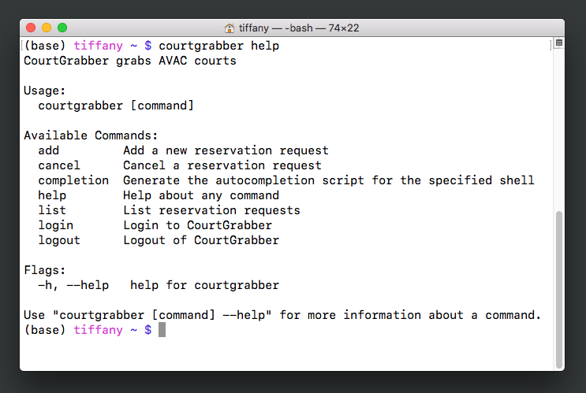

User Guide
The following user guide walks you through how to use Courtgrabber from the command line. You'll want to install Courtgrabber first; the Getting Started page tells you how to do that. If you would like to learn more about the Courtgrabber REST API, please refer to the developer guide.
Logging into Courtgrabber
You can use your tennis club account to log into the Courtgrabber program.
- With your terminal window open to the command prompt, type
courtgrabber loginand pressEnter. The screen will prompt you for your tennis club email address. - Enter your club email address and press
Enter. - At the next prompt, enter your club password.
You see a Login Successful message.
Figure 2: Logging into Courtgrabber. 
Creating a court reservation request
Courtgrabber makes it easy to request a court reservation: just follow the prompts! If you have questions about any of the prompts, refer to the definitions of key terms in the Getting Started guide.
- After you have logged into Courtgrabber, type
courtgrabber addat the command prompt and pressEnter. The screen prompts you for required information. - Type your desired date as
YYYY-MM-DDand pressEnter. - Type your desired start times, in order of preference, in
HHMM24-hour format separated by commas and then pressEnter. - Using your up and down arrow keys, select your desired duration and press
Enter. - Type your desired court numbers, in order of preference and separated by commas, then press
Enter. - Using your up and down arrow keys, select the name of the host player and press
Enter. - Using the arrow keys, select
yif you would like to reserve a ball machine. Otherwise, selectn. PressEnter. - Use the arrow keys to select whether or not you will have a second player and press
Enter.
Note
If you are not using a ball machine, you must include a second player to reserve a court.
The CLI displays a message with the Reservation Request ID.
Figure 3: Creating a court reservation request. 
Listing all reservation requests
You can view all active reservation requests using one simple command.
- While logged in, type
courtgrabber listat the command prompt and pressEnter.
You see a table displaying all of your pending requests in chronological order.
Figure 4: Listing all reservation requests. 
Canceling a pending reservation request
While a request is still pending, you can cancel it from the Courtgrabber CLI.
Note
Once a reservation is made, you must cancel it through your tennis club's reservation system.
- While logged in, type
courtgrabber cancelat the command prompt and pressEnter. - Using the up and down arrow keys, scroll through the list of your pending requests until you come to the one you wish to cancel. Press
Enter. The CLI asks you to confirm that you want to cancel the reservation. - Use the arrow keys to select
yfor yes, and then pressEnter.
You see a Reservation request {id} cancelled message.
Figure 5: Canceling a pending reservation request. 
Logging out of Courtgrabber
For the security of your account, you should logout and quit your terminal session when you are finished using Courtgrabber.
- At the command prompt, type
courtgrabber logoutand pressEnter. Courtgrabber asks you to confirm that you want to logout. - Type
yfor yes, and then pressEnter. You see aLogout Successfulmessage. - Once again at the command prompt, type
exitand pressEnter.
Your terminal session is closed, and you can safely close the CLI window.
Figure 6: Logging out of Courtgrabber. 
Getting help with Courtgrabber
If you forget which command to use, you can always ask Courtgrabber for help.
- At the command line, type
courtgrabber helpand pressEnter.
Courtgrabber displays its help screen, which includes a list of available commands.
Figure 7: Getting help with Courtgrabber. 